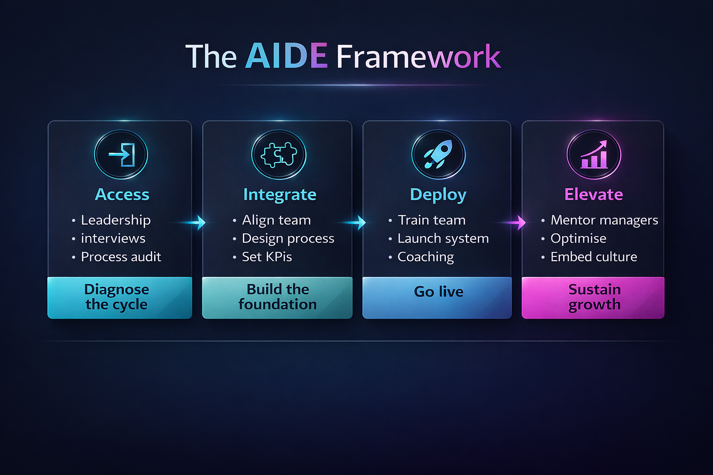

Predictable revenue is not created through isolated training events. It is built through aligned leadership, capable managers, and sales teams operating inside a clear, disciplined performance system.
AIDE is the operating method behind every SaleSycle engagement. It gives structure to the transformation journey, from understanding the commercial reality through to embedding better behaviours, stronger management rhythm, and more sustainable team performance.

A visual summary of the AIDE framework. This helps show the flow of change from initial access and integration through to deployment and elevation.
We get close to the business, the team, the leadership style, and the commercial pressure points. This stage creates real visibility of what is helping performance and what is holding it back.
We align leaders and managers first, then cascade standards, language, expectations, and support into the sales team so the system is understood and reinforced at every level.
This is where change becomes visible. New behaviours are coached in real environments, managers reinforce standards, and the sales team begins to operate with greater consistency and ownership.
Once the right habits stabilise, performance begins to compound. Confidence increases, management becomes more effective, and the organisation moves closer to predictable, sustainable revenue growth.
Sustainable commercial change starts with leaders who are visible, aligned, and clear about what good looks like. If the top of the organisation is inconsistent, the rest of the system will be too.
Managers matter, but frontline performance is where outcomes change. Better behaviour, stronger conversations, and clearer accountability at team level are what ultimately drive revenue performance.
If your business has the people but not yet the consistency, SaleSycle can help turn leadership intent into a practical, measurable commercial rhythm.
Predictable performance, built sustainably. We transform sales teams from the inside out.
Let’s discuss how we can help your sales team achieve sustainable, predictable growth.
Get in touch →